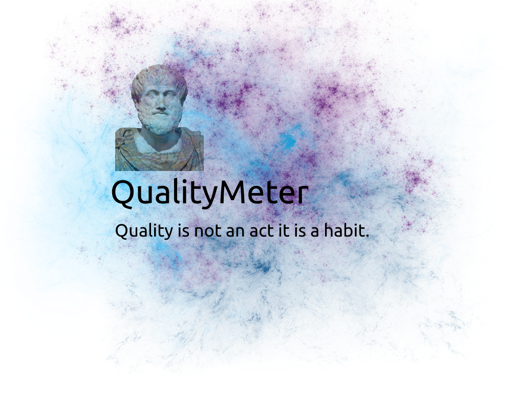

Welcome to QualityMeter
 QualityMeter is a tool to compute various design quality attributes for object-oriented programs. We adhere to the time-cost-quality triangle to evaluate the time and cost taken to achieve quality

The current version of the QualiyMeter (v0.2.0) computes the following eight quality attributes:
- Reusability Reflects the presence of object-oriented design characteristics that allow a design to be reapplied to a new problem without significant effort.
- Flexibility Charahtersitics that allow the incorporation of changes in a design. The ability of a design to be adapted to provide functionality related capabilities.
- Understandability The properties of design enable it to be easily read and comprehended. This directly relates to the complexity of the design structure.
- Functionality The responsibilities assigned to the classes of a design, which are made available by the classes through their public interfaces.
- Extendibility Refers to the presence and usage of properties in an existing design that incorporates new requirements in the design.
- Effectiveness Refers to a design's ability to achieve the desired functionality and behavior using object-oriented design concepts and techniques.
- Modularity class-level Describe the quality of the distribution of methods in the object-oriented classes in a given design.
- Modularity method-level Describe the quality of the distribution of the object-oriented classes in the packages in a given design.
Quality attributes 1 to 6 are computed based on the QMOOD model proposed by Bansiya and Davis [1]. Modularity is computed with the formula suggested by Leicht and Newman [2].
References
[1] J. Bansiya and C. G. Davis, “A hierarchical model for object-oriented design quality assessment,” IEEE Transactions on Software Engineering, vol. 28, no. 1, pp. 4–17, 2002, doi: 10.1109/32.979986.
[2] E. A. Leicht and M. E. J. Newman, “Community structure in directed networks,” Physical Review Letters, vol. 100, no. 11, p. 118703, Mar. 2008, doi: 10.1103/PhysRevLett.100.118703.